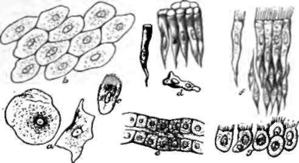

39. Epithelium
Description
This section is from the book "Animal Physiology: The Structure And Functions Of The Human Body", by John Cleland. Also available from Amazon: Animal Physiology, the Structure and Functions of the Human Body.
39. Epithelium
All the free surfaces now alluded to agree in one point, namely, that they are clothed with one or more strata of nucleated corpuscles. Such investments are termed epithelium, and the corpuscles which compose them epithelial cells.
Epithelia, in which the cells are arranged in a single layer, are termed simple, while those in which there are several layers, are distinguished as stratified; and stratified epithelia are named according to the character of the superficial layer, without regard to the numerous shapes of corpuscles in the deep layers.
In squamous or pavement epithelium the cells are flattened like scales. The surface belonging to the third group above described, including serous and synovial membranes, and the interiors of vessels, are all clothed with simple squamous epithelium of delicate microscopic character. The cuticle, which will be more particularly described anon, and the mucous membranes of the mouth, eyelids, and urinary bladder, afford instances of stratified squamous epithelium. The microscopic examination of the more delicate simple squamous epithelia, is facilitated by treating the surface to be examined with a solution consisting of one grain of nitrate of silver in an ounce of distilled water, and, after a few minutes, washing it and exposing to the light. Oxide of silver is deposited, first in the lines of contact of the edges of the cells, and, on a little further exposure, also in their substance, particularly in the nuclei.
Fig. 33. Varieties of Epithelium, a, separate squamous cells from mouth; b, from serous membrane; c, fluted cell from deep part of epidermis; d, columnar cells of intestine; t, cubical cells of kidney; f, ciliated columnar stratified epithelium of wind-pipe; g, ciliated spherical cells from choroid plexus of brain.
Columnar epithelium has the cells elongated in a direction vertical to the surface, and lying together like rods or prisms. It is found in the whole length of the alimentary canal, from the entrance into the stomach and onwards, and in the majority of ducts of glands. In glands and their ducts, there are also various transitional forms between columnar and squamous, as, for example, the cubical; and the terms spheroidal epithelium and glandular are used for the various irregular polygonal forms of corpuscle engaged in secretion in the salivary and other glands.
Ciliated epithelium is neither the mere mechanical protection which squamous epithelium is, nor the secreting structure which columnar and others often are, but has the property of keeping the moisture on its surface in a perpetual current. This it does by means of minute hair-like processes, termed cilia, projecting from the free aspect of its cells, and perpetually in motion. In a suitable fluid these cilia will continue to move for hours under the microscope, after the cells to which they belong have been detached from all other texture; and therefore both the power of movement or contractility, and the stimulus thereto, must be inherent in themselves. The character of the movement is always the same ; it is so rapid that it cannot be observed in detail till it begins to get slower, but the general effect is something like the undulation of a field of corn swept by the wind, or still liker the vibration of hot air over a furnace seen against the light. When the rapidity abates, each cilium is seen to be slightly flattened, and to bend over to one side, and recover with a feathering curve. The movement is at all times in one direction, and that direction is in every case toward the orifice of the passage, when there is one. Ciliated epithelium, with the cells of a columnar form, is found clothing the respiratory passages, including the lower part of the nasal cavity, the larynx, trachea, and bronchial tubes; it also lines the Eustachian tubes, and parts of the reproductive passages, both male and female. Ciliated epithelium of spheroidal character is common in the invertebrate and lower vertebrate animals, and is found in the ventricles of the human brain.
Continue to:
- prev: Chapter V. Free Surfaces, Epithelium, Secretion, And Integument
- Table of Contents
- next: 40. Secretion